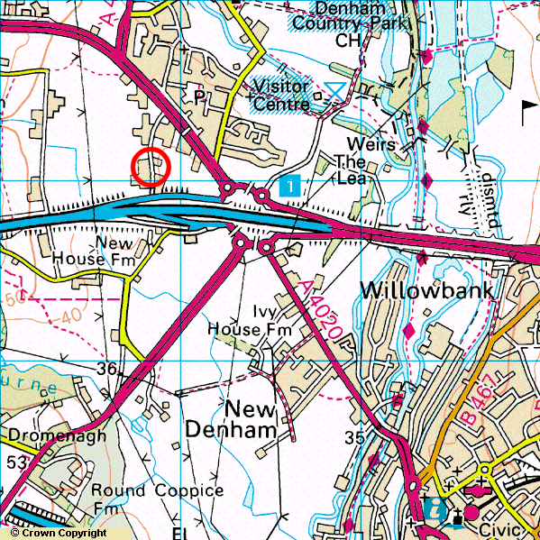
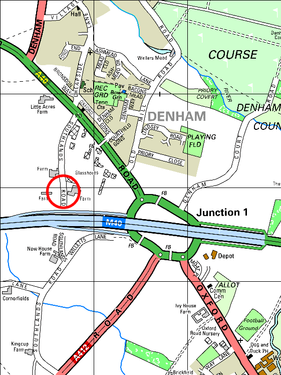

The blue road is the end of the M40 just after it's crossed the M25 at Junction 16/1A. After Junnction 1 the M40 turns into the A40 and heads into London. The map below contains more information.

Turning off the M40 at Junction 1 follow the signs for Gerrards Cross (A40). The A40, at this point, is a three lane carriageway and you will need to move over into the left hand lane quite early. About 500m North along the A40 you will go under a walkway. You can see it on the map as a white line over the road. About another 300m along there is a garden centre on the left called Denham Growers. Take the left turning immediately after called Southlands Road. It will be sign posted as a dead end. Go right to the end of the road, past the Tendercare nursery on the right. It's an ideal spot as it's only about 0.3 miles off the main road but is very quite and plenty of room to park up the cars on the side of the road. The exact point is shown on the map as a red circle.